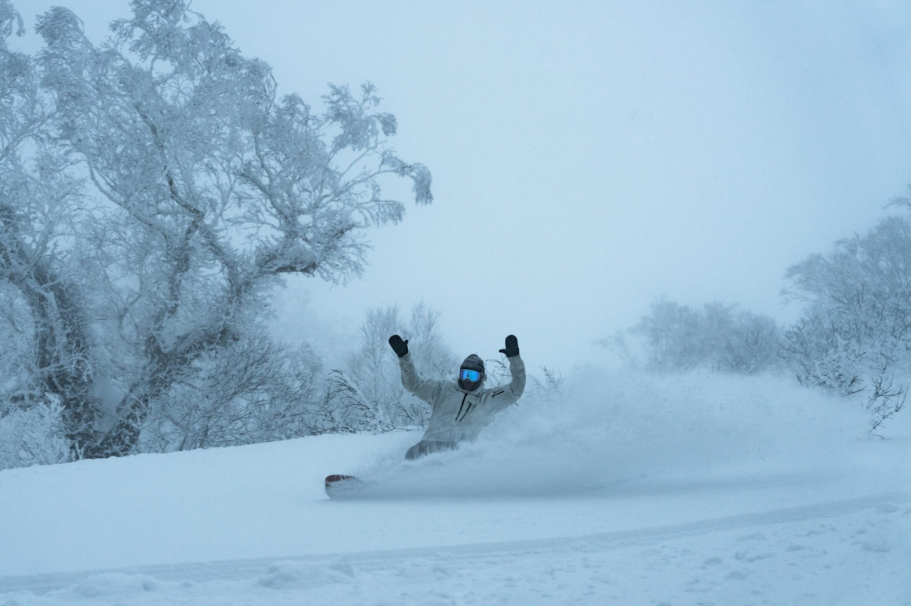

Exploring the Thrill of Snowboarding: Styles, Techniques, and Community
This article delves into the various styles and techniques of snowboarding, highlighting the excitement and culture surrounding the sport while providing insights for riders of all levels.
The Evolution of Snowboarding
Snowboarding began in the 1960s as a creative alternative to skiing, quickly gaining popularity and developing its unique identity. Over the years, snowboarding has grown into a major winter sport, with various disciplines that cater to different preferences and skill levels. Understanding the history of snowboarding allows riders to appreciate its roots and the progression of techniques that have emerged over time.
Essential Gear for Snowboarding
Before hitting the slopes, it's crucial to equip yourself with the right gear. The selection of snowboard, boots, and bindings significantly affects your performance and comfort. For beginners, choosing a soft, flexible board can make learning easier, as it allows for better control during turns and stops. As you progress, you might want to explore stiffer boards that offer enhanced responsiveness and speed. Additionally, proper fitting boots are essential, providing support while allowing for flexibility in movement.
Protective Gear
Safety is paramount in snowboarding. A well-fitted helmet is non-negotiable, as it protects against head injuries. Many riders also opt for wrist guards and padded shorts to shield against falls. These protective elements allow you to focus on improving your skills without the constant worry of injury.
Finding Your Stance
Establishing your riding stance is the first step in your snowboarding journey. Most riders either prefer a regular stance (left foot forward) or a goofy stance (right foot forward). Determining your natural stance can be as simple as sliding on a flat surface; whichever foot you lead with is typically your dominant foot. This foundational choice affects how you balance and control the board on the slopes.
Basic Techniques for Beginners
For those new to snowboarding, mastering a few basic techniques is essential. Start with balancing exercises on flat terrain to get comfortable on your board. Learning how to shift your weight from your heels to your toes is crucial for effective turns.
Turning and Stopping
Turning is one of the first skills to develop. Practice wide, gentle turns by leaning into your edges, allowing the board to carve through the snow. As you gain confidence, work on sharper turns and learn how to stop safely. The most common stopping technique involves the heel-side stop, where you shift your weight back onto your heels while positioning your board perpendicular to the slope.
Intermediate Skills: Gaining Confidence
Once you've mastered the basics, it’s time to expand your skill set. Intermediate riders should focus on refining control and experimenting with various terrain. This stage is essential for building confidence and preparing for more advanced techniques.
Edge Control
Effective edge control is crucial for navigating turns and maintaining speed. Practice shifting your weight to engage the edges of your board, enabling smoother turns and better handling. This skill is especially important when tackling steeper slopes or icy conditions, where precise control is necessary.
Riding Switch
Learning to ride switch—essentially riding backward—can greatly enhance your versatility. Start practicing on gentle slopes, gradually increasing the difficulty as you become more comfortable. Riding switch not only broadens your skill set but also allows for a more fluid and creative riding style.
Advanced Techniques: Taking It to the Next Level
For those ready to push their limits, advanced techniques and styles await. This stage is all about honing your skills and exploring new dimensions of snowboarding.
Tricks and Freestyle Riding
Freestyle snowboarding emphasizes creativity and expression. Terrain parks, equipped with jumps, rails, and halfpipes, provide the perfect setting to practice tricks. Start with simple maneuvers like ollies and grabs, gradually progressing to more complex aerial tricks. Remember to always prioritize safety and wear appropriate protective gear while practicing.
Carving and Speed Control
Carving is a fundamental technique for advanced riders, allowing for swift, controlled turns while maintaining speed. Focus on body positioning and weight distribution, bending your knees and lowering your center of gravity for better control. Mastering carving techniques not only enhances your riding experience but also adds a stylish flair to your maneuvers.
Exploring Backcountry Riding
For the adventurous, backcountry riding offers the thrill of unmarked terrain and untouched powder. However, this style comes with increased risks, and safety must always be a priority. Understanding avalanche safety, using appropriate gear, and riding with experienced partners are essential before venturing into the backcountry. The freedom of exploring remote areas can be incredibly rewarding, but knowledge and preparation are key.
The Culture of Snowboarding
Beyond the technical aspects, snowboarding boasts a rich culture that fosters community and connection among riders. Here are some elements that define the snowboarding community:
Community Engagement
Joining local snowboarding groups or clubs is a fantastic way to meet fellow riders and share experiences. Participating in group outings can enhance your skills and create lasting friendships. The sense of camaraderie within the snowboarding community adds to the overall enjoyment of the sport.
Events and Competitions
Snowboarding festivals and competitions showcase the sport's talent and excitement. Events often feature live music, competitions, and community activities, creating a vibrant atmosphere filled with energy and inspiration. Whether you're competing or cheering from the sidelines, these events foster a sense of belonging within the community.
Environmental Awareness
As snowboarding continues to grow in popularity, so does the emphasis on environmental responsibility. Many riders advocate for sustainable practices and support organizations dedicated to preserving snow-covered landscapes. This commitment to the environment strengthens the community's bond and ensures future generations can enjoy the mountains.
Conclusion: The Joy of Snowboarding
Snowboarding is a thrilling adventure that offers a unique blend of skill, freedom, and community. By mastering techniques, understanding different styles, and prioritizing safety, riders can fully embrace the sport's excitement. Whether you’re carving down groomed runs, experimenting with tricks in a terrain park, or exploring backcountry terrain, snowboarding provides endless opportunities for growth and enjoyment. So gear up, hit the slopes, and discover the joy of snowboarding for yourself.